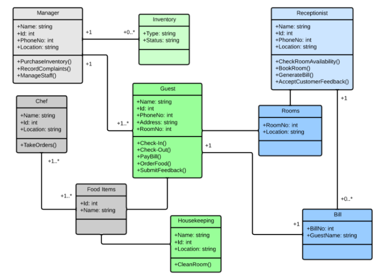
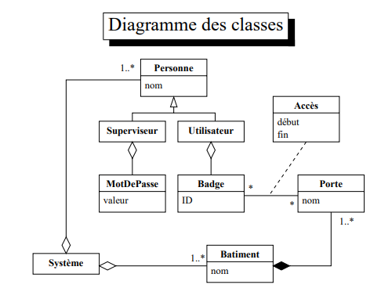
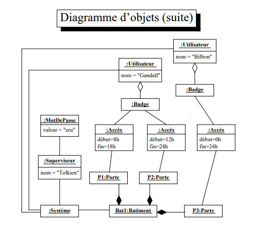
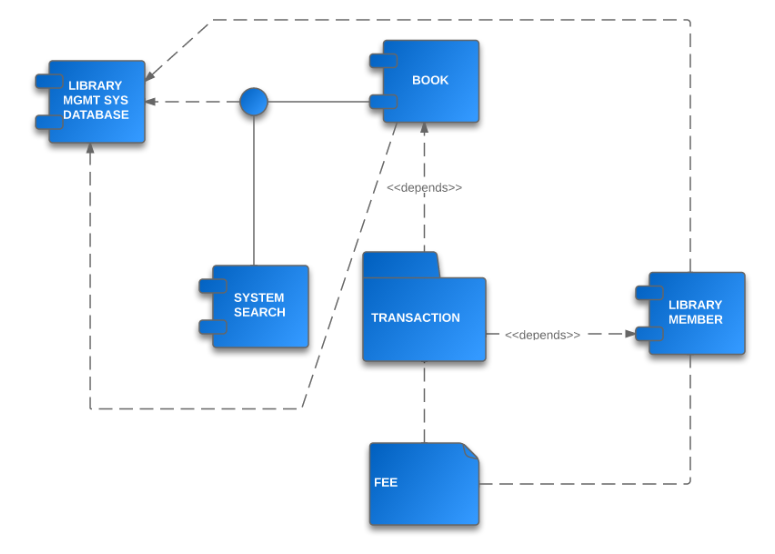
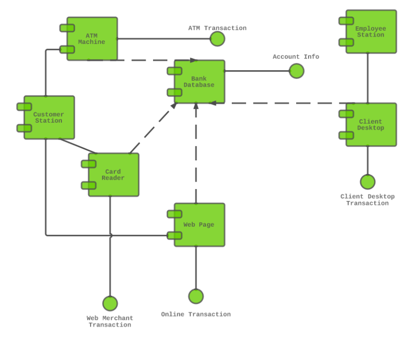
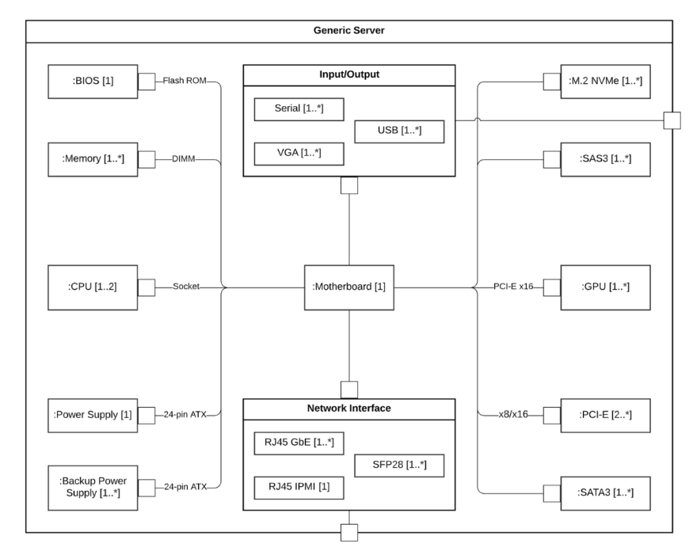
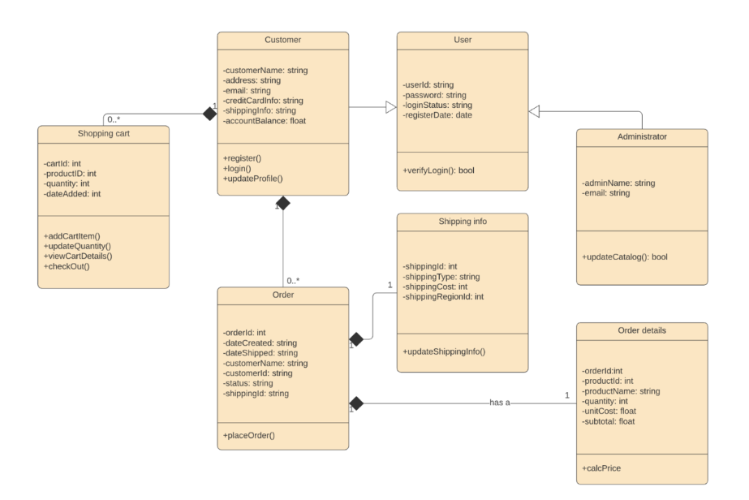
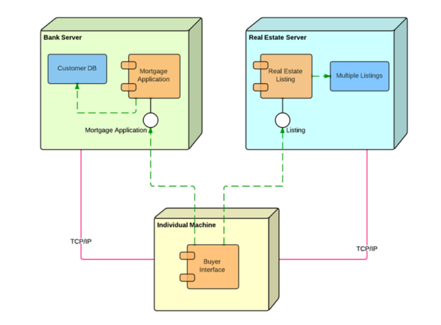
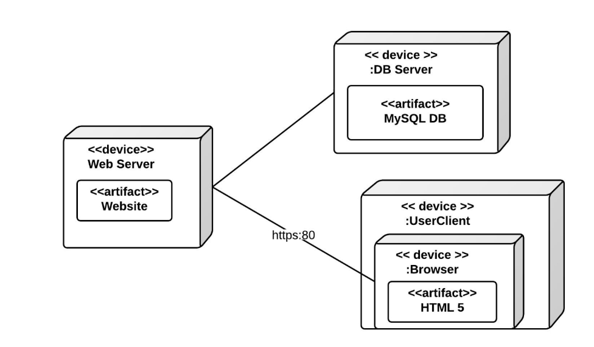
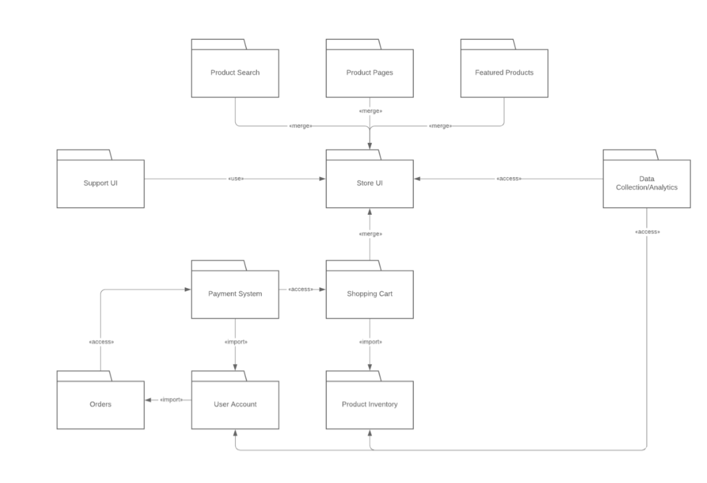

Diagrammes UML de structures
Diagramme de classes UML
Les diagrammes de classes sont l'un des types de diagrammes UML les plus utiles, car ils
décrivent clairement la structure d'un système particulier en modélisant ses classes, ses
attributs, ses opérations et les relations entre ses objets.
Le langage de modélisation unifié (UML) peut vous aider à modéliser des systèmes de plusieurs
façons. Le diagramme de classes est l'un des types les plus populaires en langage UML. Très
utilisé par les ingénieurs logiciel pour documenter l'architecture des logiciels, les diagrammes
de classes sont un type de diagramme de structure, car ils décrivent ce qui doit être présent
dans le système modélisé.
Le langage UML a été créé sous forme de modèle standardisé pour décrire une approche de la
programmation orientée objet. Comme les classes sont les composantes des objets, les diagrammes
de classes sont les composantes de l'UML. Les divers éléments d'un diagramme de classes peuvent
représenter les classes qui seront effectivement programmées, les principaux objets ou les
interactions entre classes et objets.
La forme de la classe à proprement parler se compose d'un rectangle à trois lignes. La ligne
supérieure contient le nom de la classe, celle du milieu affiche les attributs de la classe et
la ligne inférieure exprime les méthodes ou les opérations que la classe est susceptible
d'utiliser. Les classes et sous-classes sont regroupées pour illustrer la relation statique
entre chaque objet.
Toutes les classes ont des niveaux d'accès différents, en fonction du modificateur d'accès
(indicateur de visibilité). Voici les niveaux d'accès existants et les symboles qui leur sont
associés :
- Public (+)
- Privé (-)
- Protégé (#)
- Paquetage (~)
- Dérivé (/)
- Statique (souligné)
Il existe deux portées pour les membres : les classifieurs et les instances. Les classifieurs
sont des membres statiques alors que les instances sont des instances spécifiques de la classe.
Selon le contexte, les classes d'un diagramme de classes peuvent représenter les principaux
objets,
les interactions dans l'application ou les classes à programmer. Pour répondre à la question «
Qu'est-ce qu'un diagramme de classes UML ? », il vous faut d'abord comprendre sa structure de
base.
Classes : modèle pour créer des objets et mettre en œuvre un comportement dans un système. En
langage UML, une classe représente un objet ou un ensemble d'objets possédant une structure et
un comportement communs. On les représente par un rectangle comprenant des lignes pour le nom de
la classe, ses attributs et ses opérations. Lorsque vous dessinez une classe dans un diagramme
de classes, seule la ligne supérieure est obligatoire, les autres sont facultatives et ne
servent qu'à fournir des détails supplémentaires.
- Nom : première ligne d'une forme de classe.
- Attributs : deuxième ligne d'une forme de classe. Chaque attribut de la classe apparaît sur
une ligne distincte.
- Méthodes : troisième ligne d'une forme de classe. On les appelle aussi opérations ; elles
apparaissent sous forme de liste, chaque opération occupant une ligne différente.
Signaux : symboles qui représentent les communications à sens unique et asynchrones entre des
objets actifs.
Types de données : classifieurs qui définissent des valeurs de données. Les types de données
peuvent modéliser les types primitifs et les énumérations.
Paquetages : formes conçues pour organiser les classifieurs connexes d'un diagramme. On les
symbolise par une grande forme rectangulaire à onglets.
Interfaces : groupe de signatures d'opération et/ou de définitions d'attributs définissant un
ensemble cohérent de comportements. Les interfaces sont semblables à des classes, sauf qu'une
classe peut avoir une instance de son type et qu'une interface doit compter au moins une classe
pour la mettre en œuvre.
Énumérations : représentations de types de données définis par l'utilisateur. Une énumération
comprend des groupes d'identificateurs qui représentent des valeurs de l'énumération.
Objets : instances d'une ou plusieurs classes. On peut ajouter des objets à un diagramme de
classes pour représenter des instances concrètes ou prototypiques.
Artefacts : éléments du modèle qui représentent les entités concrètes d'un système logiciel,
tels que des documents, des bases de données, des fichiers exécutables, des composants
logiciels, etc.

Diagramme d'objets UML
Un diagramme d'objets UML représente une instance spécifique d'un diagramme de classes à un
moment précis. Dans sa représentation visuelle, il est très similaire à un diagramme de classes.
Les diagrammes d'objets sont simples à créer : ils sont composés d'objets, représentés par des
rectangles et reliés par des lignes. Voici les principaux éléments d'un diagramme d'objets.
Le langage UML a été créé sous forme de modèle standardisé pour décrire une approche de la
programmation orientée objet. Comme les classes sont les composantes des objets, les diagrammes
de classes sont les composantes de l'UML. Les divers éléments d'un diagramme de classes peuvent
représenter les classes qui seront effectivement programmées, les principaux objets ou les
interactions entre classes et objets.
- Objets Les objets désignent les instances d'une classe. Par exemple, si « voiture » est une
classe, « Nissan Altima 2007 » est un objet de cette classe.
- Titres de classe Les titres de classes sont les attributs spécifiques d'une classe donnée.
Dans le diagramme
d'objets arbre généalogique, ce sont le nom, le sexe et l'âge des membres de la famille. Ils
peuvent apparaître en tant qu'éléments sur l'objet, voire dans les propriétés de l'objet
même (par exemple la couleur).
- Attributs de classe Les attributs de classe sont représentés par un rectangle avec deux
onglets qui indique un élément de logiciel.
- Liens Les liens correspondent aux lignes qui relient deux formes d'un diagramme d'objets.


Diagramme de composants UML
Un diagramme de composants a pour objectif d'illustrer la relation entre les différents
composants d'un système. Dans le cadre de l'UML 2.0, le terme « composant » fait référence à un
module de classes qui représentent des systèmes ou des sous-systèmes indépendants ayant la
capacité de s'interfacer avec le reste du système.
Il existe une approche de développement entièrement articulée autour des composants: la
programmation orientée composant (POC). Dans cette approche, les diagrammes de composants
permettent au responsable de la planification d'identifier les différents composants afin que
l'ensemble du système fonctionne selon le cahier des charges.
Plus communément, dans une approche de programmation orientée objet, le diagramme de composants
permet à un développeur senior de regrouper des classes autour d'un objectif commun afin que les
parties prenantes et lui-même puissent disposer d'une vue d'ensemble sur un projet de
développement logiciel.
Bien que les diagrammes des composants puissent paraître complexes à première vue, ils sont d'une
valeur inestimable pour la conception de votre système. Ils peuvent en effet aider votre équipe
à :
- imaginer la structure physique du système ;
- faire ressortir les composants du système et à leurs relations ;
- mettre en évidence le comportement de chaque service vis-à-vis de l'interface.
Un diagramme de composants UML vous permet d'obtenir une vue d'ensemble de votre système
logiciel. Comprendre le comportement précis du service fourni par chaque élément de votre
logiciel vous aidera à devenir un meilleur développeur. Les diagrammes de composants peuvent
représenter tout type de systèmes logiciels, quel que soit le langage ou style de programmation
utilisé.
L'UML est un ensemble de conventions pour les diagrammes orientés objets avec un grand nombre
d'applications possibles. Dans les diagrammes de composants, le langage de modélisation unifié
(UML) prévoit que les composants et les packages (ou paquetages, en français) soient reliés les
uns aux autres par des lignes représentant les connecteurs d'assemblage et les connecteurs de
délégation.
Formes et symboles des diagrammes de composants UML
Les diagrammes de composants s'étendent de la vue d'ensemble sommaire aux modèles plus détaillés
et complexes. Quels que soient vos besoins, vous devrez vous familiariser avec les symboles UML
appropriés. Voici les différents types de formes qu'il vous faut connaître lorsque vous
consultez ou souhaitez réaliser des diagrammes de composants :
- Symbole de composant : Entité tenue d'exécuter une fonction stéréotypée. Un composant
fournit et consomme un comportement par le biais d'interfaces, ainsi que par le biais
d'autres composants. Considérez les composants comme un type de classe. En UML 1.0, un
composant est modélisé sous forme de bloc rectangulaire avec deux rectangles plus petits qui
dépassent sur le côté. En UML 2.0, un composant est modélisé sous forme de bloc
rectangulaire avec une petite image de l'ancienne forme UML 1.0.
- Symbole de nœud : Représente des objets matériels ou logiciels situés à un niveau supérieur
aux composants.
- Symbole d'interface : Indique les entrées ou les données qu'un composant reçoit ou fournit.
Les interfaces peuvent être représentées par des notes textuelles ou des symboles, tels que
des formes de sucette, de douille ouverte et d'articulation.
- Symbole de port : Spécifie un point d'interaction distinct entre un composant et son
environnement. Les ports sont symbolisés par un petit carré.
- Symbole de paquetage : Regroupe plusieurs éléments du système et est représenté par des
dossiers de fichiers dans Lucidchart. Tout comme les dossiers de fichiers regroupent
plusieurs feuilles, les packages peuvent englober plusieurs éléments.
- Remarque : Permet aux développeurs d'ajouter une méta-analyse sur le diagramme de
composants.
- Symbole de dépendance : Indique les relations de dépendance entre les différentes parties de
votre système. Les dépendances sont représentées par des lignes pointillées reliant un
composant (ou élément) à un autre.


Diagramme de structures composites UML
Un diagramme de structure composite est un diagramme structurel UML qui fournit une vue
d'ensemble logique de l'ensemble ou d'une partie d'un système logiciel. Il permet de visualiser
un classifieur structuré donné, en définissant ses classes de configuration, ses interfaces, ses
packages et les liens qui les unissent dans le détail.

Un diagramme de structure composite permet aux utilisateurs de déterminer précisément ce qui est
contenu dans un objet, en spécifiant la manière dont différentes propriétés interagissent pour
produire un certain comportement. Les différentes relations au sein d'un système logiciel
complexe peuvent être difficiles à appréhender, mais la décomposition des fonctionnalités peut
fournir des informations précieuses sur la manière dont les structures sont interconnectées,
dont les informations sont communiquées, etc.
Un diagramme de structure composite offre également les avantages suivants :
Bien que les diagrammes des composants puissent paraître complexes à première vue, ils sont d'une
valeur inestimable pour la conception de votre système. Ils peuvent en effet aider votre équipe
à :
- Il aide les utilisateurs à comprendre l'état actuel de leur système.
- Il décompose la structure interne de plusieurs classes, interfaces ou composants, et leurs
interactions.
- Il détaille les architectures d'exécution et les modèles d'utilisation que les diagrammes
statiques ne peuvent pas représenter.
- Il fournit aux utilisateurs des informations pour optimiser et dépanner leur système.
Composants de base des diagrammes de structures composites UML
- Terminator : Indique les points de départ et de fin
- Nœud (circulaire) : Indique les événements ou les jalons et contient des chiffres
- Nœud (rectangulaire) : Indique les événements ou les jalons et contient des chiffres
- Acteur : Interagit avec le système depuis l'extérieur (p. ex. une personne, un équipement,
etc.)
- Classe : Regroupe les objets ayant des propriétés ou des comportements communs (p. ex. des
opérations, des paramètres, des attributs, etc.)
- Partie : Agit comme une instance d'exécution des classes ou des interfaces
- Port : Définit le comportement que l'exécutant accepte de respecter
- Raccord : Représente les liens de communication entre les parties
En tant que diagrammes UML, les diagrammes de structure composite et les diagrammes de classes
sont utilisés pour visualiser et organiser les acteurs, les interactions et les artefacts au
sein d'un système. Mais si les diagrammes de structure composite et les diagrammes de classes
ont des significations similaires, ils diffèrent au final dans la façon dont ils représentent
ces informations. Pour faire simple, les diagrammes de structure composite sont plus spécifiques
et moins ambigus que les diagrammes de classes.
Un diagramme de structure composite permet aux utilisateurs de modéliser plus clairement les
implémentations de l'activité d'un artefact dans un environnement d'exécution. Ils sont
également plus efficaces pour illustrer la décomposition en contexte, en décrivant la structure
interne de plusieurs classes et les liens qui existent entre elles. En résumé, si vous souhaitez
transmettre des informations concrètes et explicites sur les comportements et les associations
au sein de votre système, optez pour un diagramme de structure composite.

Diagramme de deploiement UML
Dans le contexte du langage de modélisation unifié (UML), un diagramme de déploiement fait partie
de la catégorie des diagrammes structurels, car il décrit un aspect du système même. Dans le cas
présent, le diagramme de déploiement décrit le déploiement physique des informations générées
par le logiciel sur des composants matériels. On appelle artefact l'information qui est générée
par le logiciel. Attention, ne confondez cette utilisation du terme avec celle qui existe dans
d'autres approches de modélisation comme le BPMN.
Les diagrammes de déploiement sont constitués de plusieurs formes UML. Les boîtes en trois
dimensions, appelées nœuds, représentent les composants du système, qu'ils soient logiciels ou
matériels. Les lignes entre les nœuds indiquent les relations et les petites formes à
l'intérieur des boîtes représentent les artefacts logiciels qui sont déployés
Les diagrammes de déploiement sont utiles dans plusieurs domaines. Vous pouvez les utiliser pour
:
- Montrer quels éléments logiciels sont déployés par quels éléments matériels.
- Illustrer le traitement d'exécution du point de vue matériel
- Visualiser la topologie du système matériel
Les diagrammes de déploiement sont composés de nombreuses formes. La liste suivante offre un
aperçu des principaux éléments que vous pourriez rencontrer. Vous pouvez apercevoir la plupart
d'entre eux dans l'image ci-dessous.
- Artefact : produit développé par le logiciel, symbolisé par un rectangle avec le nom et le
mot « artefact » entourés de flèches doubles.
- Association : ligne indiquant un message ou tout autre type de communication entre deux
nœuds.
- Composant : rectangle avec deux onglets indiquant un élément logiciel.
- Dépendance : ligne en pointillés terminée par une flèche, qui indique qu'un nœud ou
composant est dépendant d'un autre.
- Interface : cercle qui indique une relation contractuelle. Les objets qui réalisent
l'interface doivent remplir une sorte d'obligation.
- Nœud : élément matériel ou logiciel représenté par une boîte en relief.
- Nœud conteneur : nœud qui en contient un autre, comme dans l'exemple ci-dessous où les nœuds
contiennent des composants.
- Stéréotype : dispositif contenu dans le nœud, présenté dans la partie supérieure du nœud et
dont le nom est entouré de flèches doubles.


Diagramme de paquetages UML
Les diagrammes de package (ou diagramme de paquetages) sont des diagrammes structurels utilisés
pour représenter l'organisation et la disposition de divers éléments modélisés sous forme de
paquetages. Un paquetage est un regroupement d'éléments UML apparentés, tels que des diagrammes,
des documents, des classes ou même d'autres paquetages. Tous les éléments du diagramme sont
imbriqués dans des paquetages, qui sont eux-mêmes représentés sous forme de dossiers de fichiers
et organisés de manière hiérarchique. Les diagrammes de paquetages sont le plus souvent utilisés
pour donner un aperçu visuel de l'architecture en couches d'un classifieur UML, tel qu'un
système logiciel.

Un diagramme de package bien conçu offre de nombreux avantages aux personnes souhaitant créer une
représentation graphique de leur système ou projet UML.
- Ils fournissent une perspective précise de la structure hiérarchique des différents éléments
UML au sein d'un système donné.
- Ces diagrammes permettent de simplifier les diagrammes de classes complexes sous une forme
visuelle bien ordonnée.
- Ils offrent une vue d'ensemble précieuse pour les projets et systèmes de grande ampleur.
- Les diagrammes de paquetages peuvent être utilisés pour clarifier visuellement de nombreux
types de projets et systèmes.
- Ces visuels peuvent être facilement mis à jour au fur et à mesure de l'évolution des
systèmes et des projets.
Les éléments qui composent un diagramme de paquetages sont relativement simples. En effet, ces
derniers ne comportent que deux symboles :
- Package : Regroupe des éléments apparentés en fonction des données, du comportement ou de
l'interaction avec les utilisateurs
- Interdépendance : Décrit la relation entre un élément (paquet, élément nommé, etc.) et un
autre
Ces symboles peuvent être utilisés de plusieurs manières pour représenter différentes itérations
de paquetages, de dépendances et d'autres éléments au sein d'un système. Voici les composants de
base que vous trouverez dans un diagramme de package :
- Paquetage : espace de noms utilisé pour regrouper un ensemble d'éléments liés de manière
logique au sein d'un système. Tous les éléments contenus dans un paquetage doivent être
empaquetables et porter un nom unique.
- Élément empaquetable : élément nommé, appartenant éventuellement de manière directe à un
paquetage. Il peut s'agir d'événements, de composants, de cas d'utilisation et même de
paquetages. Les éléments empaquetables peuvent également être représentés sous la forme d'un
rectangle à l'intérieur d'un paquetage, marqués avec le nom correspondant.
- Dépendances : représentation visuelle de la façon dont un élément (ou un ensemble
d'éléments) dépend d'un autre ou l'influence. Les dépendances sont divisées en deux groupes
: les dépendances d'accès et les dépendances d'importation. (Voir la section suivante pour
plus d'informations).
- Element import : relation dirigée entre un espace de noms d'importation et un élément
empaquetable importé. Ce symbole est utilisé pour importer des éléments particuliers sans
avoir recours à l'importation de paquetages et sans les rendre publics dans l'espace de
noms.
- Package import : relation dirigée entre un espace de noms d'importation et un paquetage
importé. Ce type de relation dirigée ajoute le nom des membres du paquetage importé à son
propre espace de noms.
- Package merge : relation dirigée dans laquelle le contenu d'un paquetage s'ajoute au contenu
d'un autre. En d'autres termes, le contenu de deux paquetages fusionne pour former un
nouveau paquetage.